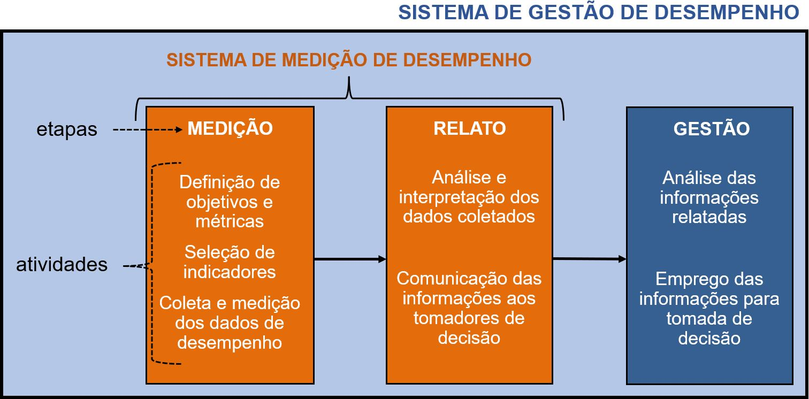

4 Sistemas de Medição e de Gestão de Desempenho
Esta subseção define e propõe uma forma de orientação dos Sistemas de Medição e de Gestão de Desempenho, contextualizando-os entre os indicadores de desempenho e as organizações.
A gestão de desempenho compreende um sistema integrado, em que as informações coletadas sobre o desempenho das organizações estão intimamente ligadas à sua direção estratégica (Ensslin; Welter; Pedersini, 2022). Para tanto, essa gestão deve ser sistematizada, resultando em um Sistema de Gestão de Desempenho (SGD), composto por três etapas (Melo; Mota, 2020):
Define, mede e coleta qualitativamente e quantitativamente a entrada, saída e nível de atividade ou resultado de ações, pessoas e programas.
Interpreta e comunica os resultados das informações de desempenho aos tomadores de decisã.
Analisa as informações relatadas e age sobre elas, objetivando melhorias organizacionais.
4.1 Sistemas de medição e de gestão de desempenho
Das etapas apresentadas nas guias acima, a medição e o relato integram um subsistema específico, denominado Sistema de Medição de Desempenho (SMD). Para se compor um Sistema de Gestão de Desempenho (SGD), após a medição e o relato (etapas dos SMD), são acrescentadas a análise do desempenho, identificando os fatores críticos que impactam na performance da organização e subsidiam a tomada de decisões (Martins et al., 2022). A figura abaixo sintetiza os processos internos dos SGD, conforme as etapas propostas por Melo e Mota (2020) e atividades descritas por Grøn e Kristiansen (2022).

Como sistemas, a gestão engloba a medição de desempenho; em linhas gerais, Sistemas de Medição de Desempenho (SMD) organizacionais identificam, medem, analisam e comunicam o desempenho de atividades, processos, projetos, organizações, programas e políticas públicas (Uchoa, 2013) por meio de um conjunto multidimensional de indicadores de desempenho (ENAP, 2021a; Mustea; Mihiţ; Lobonţ, 2021; De Waele et al., 2021).
Portanto, como uma das formas para a administração pública apresentar resultados de valor e gerar impactos positivos na sociedade, tem-se SGD para a análise e tomada de decisões fundamentadas em informações, que são coletadas e relatadas pelos SMD: daí a importância e a relação entre esses sistemas. Nesse sentido, para Fryer, Antony e Ogden (2009) um SMD é um “elemento crucial” do SGD; de forma similar, para Brasil (2009) é “parte essencial”.
Sistemas de Medição e de Gestão de Desempenho proporcionam a ligação entre os indicadores de desempenho e as organizações, permitindo que essas se utilizem dos benefícios proporcionados por aqueles.
Considerando os objetivos deste guia e que as atividades da etapa de gestão de desempenho cabem especificamente são próprias de cada organização, as subseções seguintes tratarão dos SMD.
4.2 Características dos Sistemas de Medição de Desempenho
Indicadores de desempenho não atuam de forma isolada, sendo elementos importantes dos SMD. Para cumprir com seus objetivos e ofertar os resultados esperados e necessários às organizações, esses sistemas precisam ter as seguintes características:
A organização como um todo, suas subunidades e processos precisam ser considerados e representados de forma sistêmica.
A representação sistêmica da organização precisa ser equilibrada com ponderação entre medição conforme suas estruturas, bem como entre seus processos e resultados.
As ações das etapas e atividades desse sistema (definição, medição, monitoramento, avaliação e comunicação dos resultados) devem ser integradas e dinâmicas.
As diferentes dimensões envolvidas (ambientes interno e externo, partes interessadas, temporalidade das medições etc.) precisam ser consideradas no sistema.
O sistema deve ter uma compreensão fácil, simples e aplicação na organização, devendo essa característica prevalecer sobre sistemas complexos, ainda que informatizados.
Além das características acima, cada SMD possui formas de orientação e dimensões de medição de desempenho próprios, que implicam na definição dos indicadores de desempenho. Como exemplo, o Balanced Scorecard (BSC) proposto por Kaplan e Norton (1992), que é o SMD mais empregado no setor público (Moura et al., 2019; 2020), é orientado conforme a estratégia da organização por meio das dimensões financeiras, clientes, processos internos, aprendizado e inovação.
A multidimensionalidade é uma característica importante para os SMD, especialmente quando aplicados no setor público (será tratada na seção seguinte) e a orientação do SMD é o parâmetro que baliza a definição dos objetivos a serem considerados e dos objetos a serem medidos por esse sistema, cuja forma será proposta a seguir.
4.3 Orientação de um SMD para órgãos públicos
No setor público, benefícios como melhoria contínua (Smith; Halligan; Mir, 2021), suporte na tomada de decisões, comparaçãoentre organizações(Král, 2022) e comunicação de resultados relevantes à sociedade (Moura et al., 2020) aderem a um SMD orientado pelas missões institucionais, que considera os propósitos das instituições e suas missões, não se restringindo ao que seja crítico ou estratégico. Todavia, benefícios como a avaliação de metas (Trong; Quang, 2020), a definição e o alinhamento de prioridades (Borst; Lako; De Vries, 2014), provêm da orientação conforme os objetivos da instituição ( sejam eles estratégicos ou não). Consequentemente, quanto aos benefícios proporcionados, as duas formas mostram-se complementares.
As missões institucionais, especialmente no setor público, absorvem as missões sociais e os produtos e serviços da instituição pela própria definição de missão, considerando assim o que se deseja ofertar à sociedade para satisfação de suas necessidades.
Os objetivos (institucionais ou estratégicos) refletem aspirações futuras das instituições e devem ser considerados, pois indicadores de desempenho também atuam como ferramentas na implantação desses objetivos.
Nem todos os órgãos públicos podem possuir um plano e objetivos estratégicos estabelecidos, ao contrário das suas missões e objetivos institucionais, advindos do próprio ato normativo que estabelece a sua criação. Portanto:
SMD orientados pelo balanço entre as missões e objetivos das instituições possuem abrangência e precisão, fazendo frente às características e necessidades das instituições públicas.
Em função da complexidade do setor público, os estudos são unânimes ao citar que não se pode considerar um SMD padrão que se encaixe e modelo para todos os tipos de organizações públicas (Johnsen; Vakkuri, 2006; Chua; Goh, 2009; Siti-Nabiha; Fuad, 2011; Goh, 2012; Oh; Bush, 2015; Gao, 2015; Moura et al., 2020; Gębczyńska; Brajer-Marczak, 2020; De Waele et al., 2021). Assim sendo, uma forma de orientação balanceada considera e absorve a diversidade de organizações desse setor.
A subseção seguinte apresenta as diversas dimensões de medição, também requeridas pelo setor público para seus SMD.